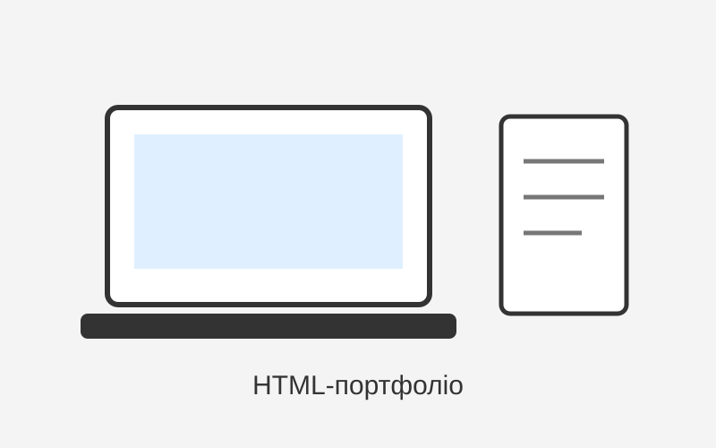

Вітаю на моєму сайті
Це мій перший навчальний сайт-портфоліо, створений тільки за допомогою HTML, без CSS та JavaScript. Тут я показую базову структуру сторінок, навігацію, таблиці, форми та мультимедійні елементи.
Я тільки поступово розбираюся у фронтенд-розробці, тому цей сайт зроблений просто, але з використанням семантичних HTML-тегів. Для мене важливо не просто скопіювати код, а зрозуміти, як сторінка влаштована всередині.
Моя ціль — навчитися робити зрозумілі, акуратні та зручні веб-сторінки, а потім уже додавати до них стилі та логіку.
Мої цілі у навчанні
- Навчитися правильно створювати HTML-структуру сторінки.
- Краще зрозуміти семантичні теги та їх призначення.
- Поступово перейти до CSS, адаптивної верстки та JavaScript.
- Зібрати всі лабораторні роботи в одному репозиторії GitHub.
Невелике мотто
Краще зробити просту роботу до кінця, ніж нескінченно чекати ідеального моменту.
Зображення
